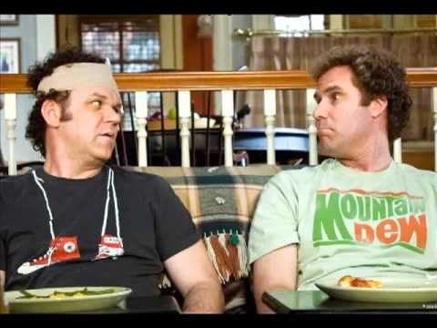
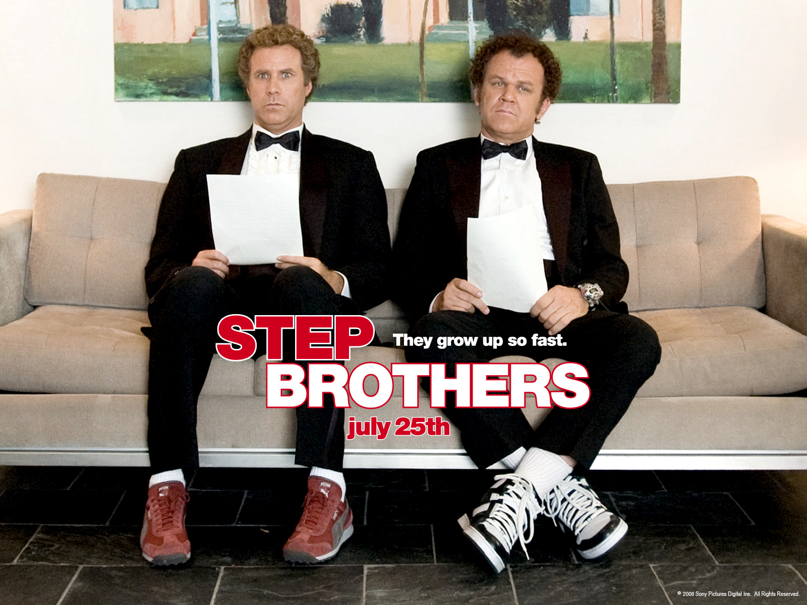
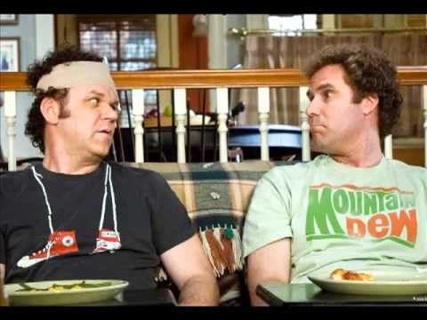
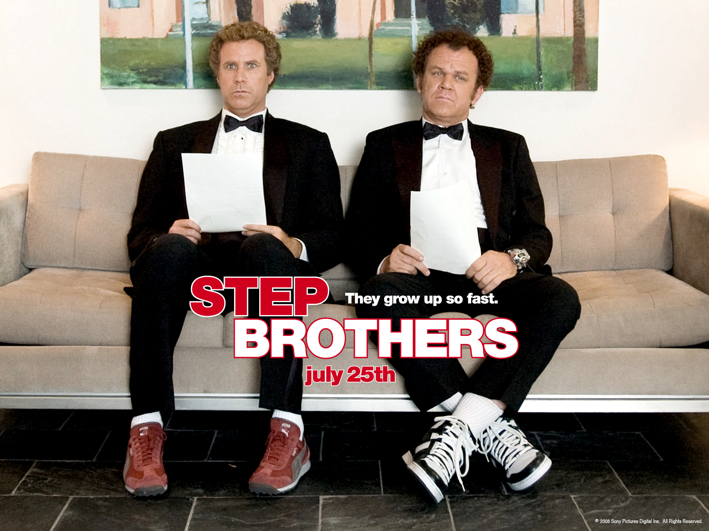

I'm 17 years old, you reading this now in 10 years puts you at 27. I don't really know what to say to you. But I guess just what I think that should be going on in my life when I reach 27. I hope I finally realized what my passion is and found that in a job and love what I do. I would like to be married right now and have kids by 30 and a nice house. Everyone doing well in the family including my parents. Dad will be over 50 which will be hilarious and so will Mom. I would love for them to be doing well, and even be earning enough from my job to being able to help them out in there old old age. My sister will be 29 and little Nick will be 17 i believe. Its weird to think of Nick at that age but I think he will be doing just fine. Getting great grades in school and have a bright looking future. Arielle on the other hand will be doing great in California making a lot of money doing what she loves. I hope that we still keep in contact after she leaves, and you reading this right now, if something when south and you and our sister are not on good terms. Stop whatever your doing and make things right. She is your sister, best friend, and that one amazing person that's always been there for you. I don't really know what else to say, be smart as dad always says. And enjoy life don't ever forget.
HAPPINESS
I would say happiness is one of the most important things in life. If you don't have it, then what do you have? Nothing. You should always do the things that make you happy, as well as others. My mom always says do whatever makes you happy, even if you wanted to work at a gas station your whole life because it makes you happy, then so be it. My mom would say jokingly. I hope 10 years from now I am as happy as I could be. But if I am not, I better be trying to make it happen.
FREEDOM
Is to have things all in order, well I guess that's I view to get it. Because if you have all your priorities straight like money for the future, solid relationships ect. then it gives you freedom to do things you enjoy. So, i guess freedom is to be able to do the things you enjoy without anyone saying you can't because of this or that.
 


